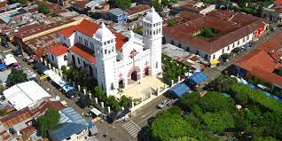
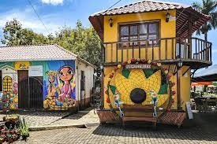
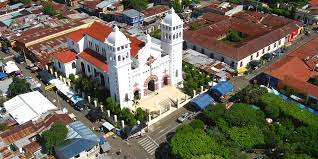
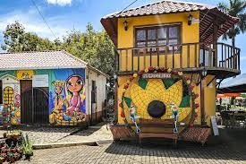

La Ruta de las Flores es una encantadora travesía sobre la cordillera Apaneca- Ilamatepeq entre los departamentos de Ahuachapán y Sonsonate en el occidente de El Salvador, agradable clima fresco, sitios impregnados de tradiciones e historia, una peculiar gastronomía y variedad de hostales y pequeños hoteles que harán de su estadía un colorido recuerdo de su paso por El Salvador.
 




| tours | precio |
|---|---|
| 1 la ruta de flores | $28 |
| 2 las flores | $41 |
| 3 tour ruta las flores | $30 |
| 4 tours ataco | $25 |